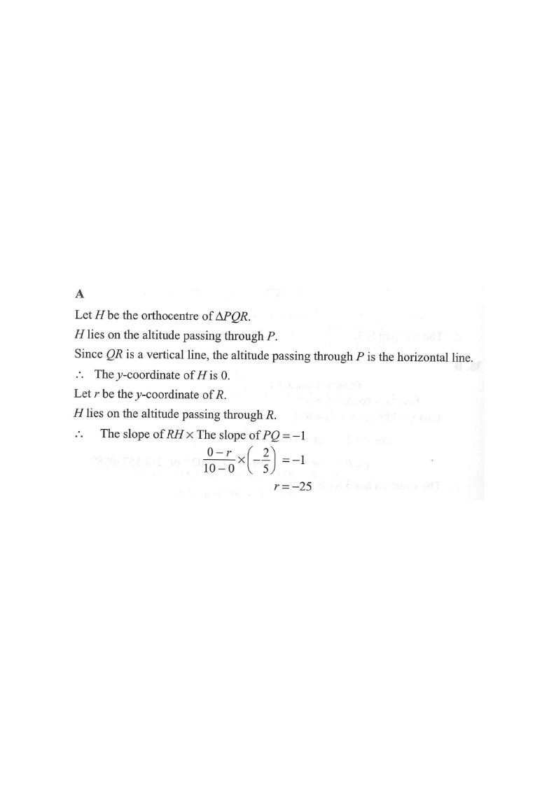

座標幾何 · 三角形的垂心

$$P\left(\frac{a}{2},0\right),\qquad Q\left(0,\frac{a}{5}\right)$$
$PQ$ 的斜率 $=\dfrac{\frac{a}{5}-0}{0-\frac{a}{2}}=-\dfrac{2}{5}$。
$Q$、$R$ 都在 $y$ 軸上，故 $QR$ 鉛垂，由 $P$ 作出的高線水平，即 $y=0$。
故垂心 $H$ 的 $y$ 坐標為 $0$；已知其 $x$ 坐標為 $10$，即 $H=(10,0)$。
設 $R=(0,r)$，則 $RH$ 的斜率 $=\dfrac{r-0}{0-10}=-\dfrac{r}{10}$。
$$\left(-\frac{r}{10}\right)\left(-\frac{2}{5}\right)=-1$$
$$\frac{2r}{50}=-1\;\Rightarrow\;r=-25$$